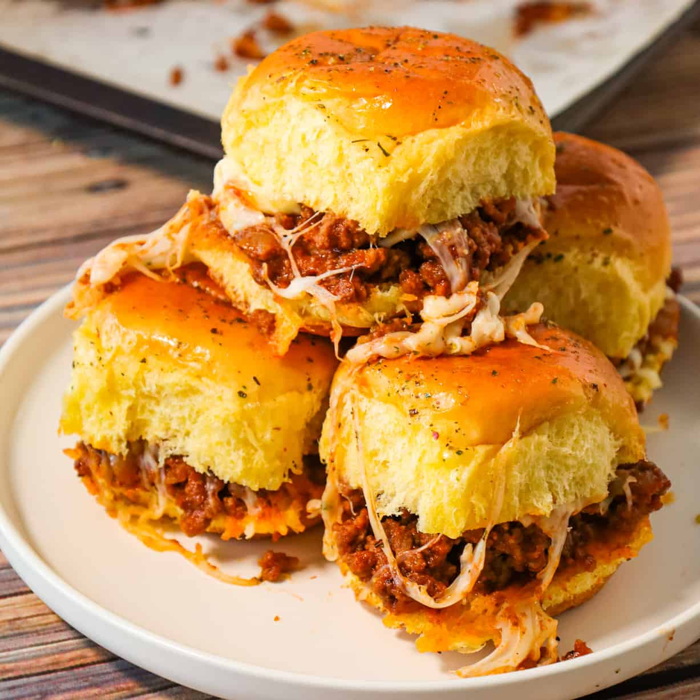

Sloppy Joe Sliders

Ingredients
- 1 lb ground beef
- 1 teaspoon salt
- ½ teaspoon pepper
- ½ white onion, diced
- 1 clove garlic, minced
- ¾ cup ketchup
- 2 teaspoons mustard
- 1 teaspoon worcestershire sauce
- 2 teaspoons brown sugar
- 1 pack dinner roll
- ½ cup shredded cheddar cheese
- 2 tablespoons butter, melted
- sesame seed
Directions
- Preheat oven to 350°F (180°C).
- In a saucepan over medium heat, add the ground beef and sprinkle with salt and pepper.
- Using a spoon, break up the meat and stir until browned.
- Add the onion and garlic and continue to cook until the onions are translucent.
- Add the ketchup, mustard, Worcestershire, and brown sugar.
- Stir until the meat is fully cooked and sauce is evenly combined. Set aside.
- Cut the dinner rolls in half and place the bottom half in a baking pan.
- Top with meat and sprinkle with cheese. Place the top of the rolls back on top.
- Brush the rolls with melted butter and sprinkle with sesame seeds.
- Bake for 10 minutes, or until rolls are toasted and cheese is melted.
- Cut into individual sliders.